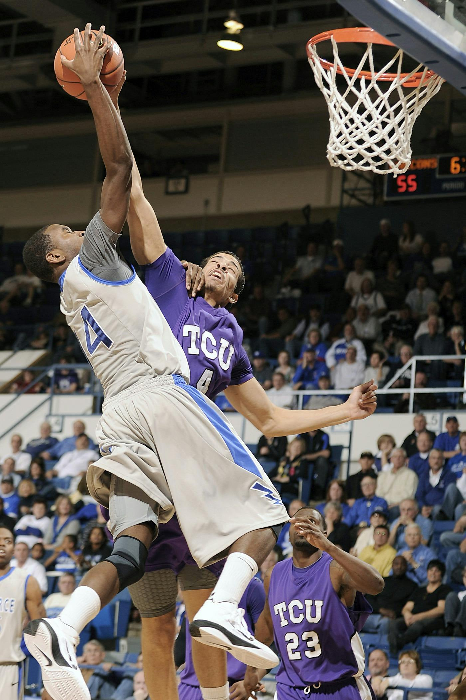

Introduction
In my job I help peoples musculoskeletal system. The musculoskeletal system includes the bones, muscles, ligaments, tendons, and nerves. My practice is out in New York. I've been helping people with there problems for more than 15 years. I live alone with my two cats, Tom and Jerry. They are both tabby cats and there brothers from the same litter.
Education
| Institution | Degree | Duration |
|---|---|---|
| Abraham Lincoln High School | High School Diploma | 4 years |
| Palmer College of Chiropractic, Iowa | Doctorate | 8 years |
Experience
| Position | Company | Duration | Description |
|---|---|---|---|
| Intern | XYZ Chiropractic Clinic | 1 year | Assisted in helping patients under the supervision of a higher up. I learned a lot about compassion and gained very important hands-on experience. |
| Associate Chiropractor | ABC Chiropractic Center | 3 years | I began to work with my own patients here such as athletes and older people. I also began to learn teamwork and collaborated with other physicians. |
| Chiropractor | Becky Sue's Chiropractic Clinic | 11 years | I began to teach interns what I had learned all those years ago and opened up my own clinic. I now specialize in athlete care, whether it is an injury or just to try to prevent one. |
Skills
Technical Skills
- Spinal Adjustments
- Physical Therapy
- Sports Injury Rehabilitation
- Patient Assessment
Soft Skills
- Compassion
- Teamwork
- Communication
- Problem-solving
Projects
Sport Injury Rehabilitation
My program is designed to help athletes recover from their injuries quicker and prevent more from happening in the long run. Everyone of our athletes has a customized program depending on their needs whether there is an injury or an alete is just trying to take care of themselves. We also use this program to help train new chiropractors.
Patient Education Initiatives
We make brochures and videos to help educate patients. We also upload all this information onto our website for those that are willing to learn.